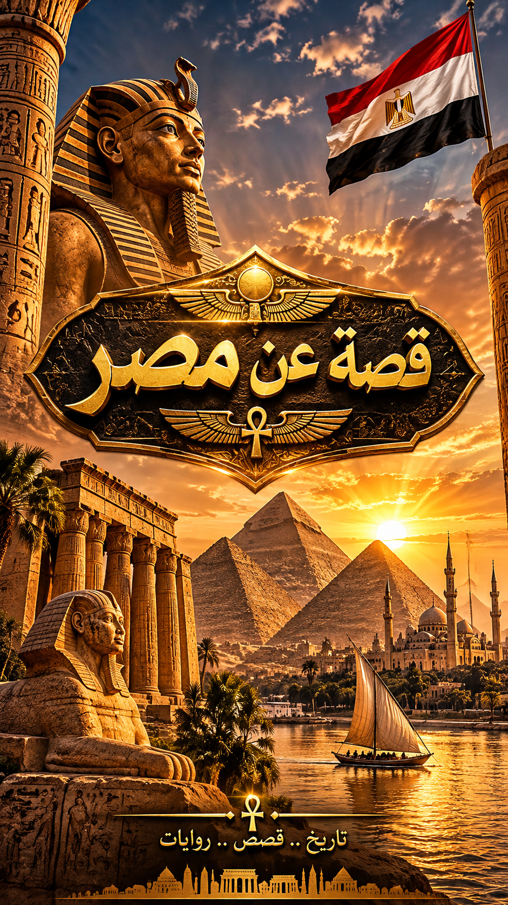

مصر القديمة
الفراعنة والأسرار والآثار

رحلة عبر آلاف السنين
تاريخ • قصص • روايات
تأليف وإعداد: الحسن محمد
يمكنك كتم الموسيقى في أي وقتمن ذاكرة الأرض
اكتشف تاريخ مصر وشخصياتها وحضارتها، من أقدم العصور إلى مصر الحديثة.
ابدأ الرحلةاكتشف
الفراعنة والأسرار والآثار
الإسكندرية وتلاقي الحضارات
تراث وعمارة وحكايات
القاهرة والمساجد والمدارس
تحولات صنعت مصر المعاصرة
أشخاص تركوا أثرًا في التاريخ
من المكتبة
هنا ستظهر القصص التي تضيفها من لوحة التحكم.